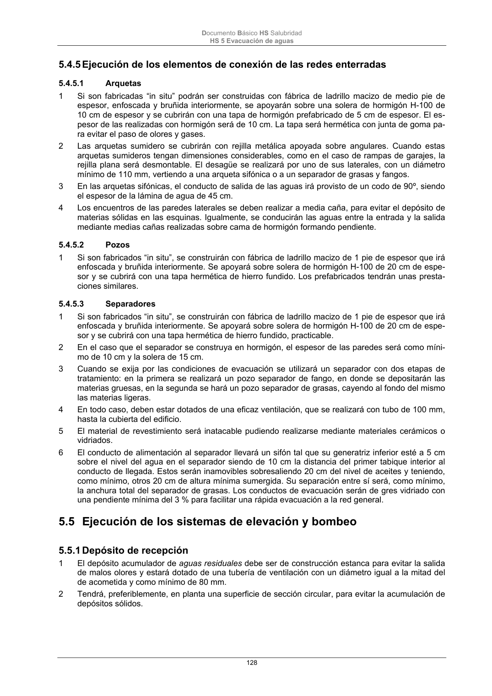

DB-HS · Fragmento de PDF p127 · versión 2022-06-14 · capa oficial
Formatos: JSON compacto · Markdown · PDF fuente
Ámbito del documento · texto del ámbito · documento y tablas
ID técnico a0286 · PDF pág. 127-128 · jerarquía no validada por persona · no es capítulo: sin_linea_de_encabezado · padre: raíz · literal original en el contenido: «5.4.4 Protección de las tuberías de fundición enterradas»
5.4.4 Protección de las tuberías de fundición enterradas 1 En general se seguirán las instrucciones dadas para las demás tuberías en cuanto a su enterra- miento, con las prescripciones correspondientes a las protecciones a tomar relativas a las caracte- rísticas de los terrenos particularmente agresivos. 2 Se definirán como terrenos particularmente agresivos los que presenten algunas de las característi- cas siguientes: a) baja resistividad: valor inferior a 1.000 x cm; b) reacción ácida: pH < 6; c) contenido en cloruros superior a 300 mg por kg de tierra; d) contenido en sulfatos superior a 500 mg por kg de tierra; e) indicios de sulfuros; f) débil valor del potencial redox: valor inferior a +100 mV. 3 En este caso, se podrá evitar su acción mediante la aportación de tierras químicamente neutras o de reacción básica (por adición de cal), empleando tubos con revestimientos especiales y emplean- do protecciones exteriores mediante fundas de film de polietileno. 4 En éste último caso, se utilizará tubo de PE de 0,2 mm de espesor y de diámetro superior al tubo de fundición. Como complemento, se utilizará alambre de acero con recubrimiento plastificador y tiras adhesivas de film de PE de unos 50 mm de ancho. 5 La protección de la tubería se realizará durante su montaje, mediante un primer tubo de PE que servirá de funda al tubo de fundición e irá colocado a lo largo de éste dejando al descubierto sus ex- tremos y un segundo tubo de 70 cm de longitud, aproximadamente, que hará de funda de la unión. Documento Básico HS Salubridad HS 5 Evacuación de aguas 128

PDF fuente redistribuible: copia fiel enlazada en esta página (SHA256 verificado).